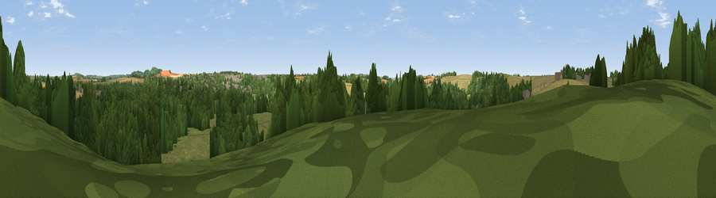

Viewpoint near West Amesbury
#43978 in England · top 94% of its area beats it · near West AmesburyWhere it is
The exact computed spot (SU 14625 41725). Click the marker for map links.
The view, rendered

A 360° render of this exact spot computed from the terrain model, tree cover and land cover — summer colours, afternoon light, calibrated against photographs of famous viewpoints. Real trees, hedges and buildings will differ in detail.
The panorama
Grey silhouette: terrain skyline in each direction (720 bearings, Earth curvature and refraction included). Dashed green: skyline with trees (+15 m) and buildings (+8 m) as obstacles. Blue strip: how far the ground is visible on each bearing.
Where the view opens
Wedge length = distance to the farthest visible ground on that bearing (vegetation-aware). Rings at 10, 25 and 50 km.
What fills the view
38% woodland · 29% cropland · 29% grassland · 5% built-up
Angular shares of the visible panorama (visual magnitude), not map area. Landscape diversity 0.53 (0–1 Shannon).
Key numbers
More beautiful places nearby
The staircase of upgrades: each row has a higher view potential than everything closer. Driving times are estimates from straight-line distance, calibrated against real road routing — check an actual route before setting out.
| Place | Direction | Drive | Score |
|---|---|---|---|
| Viewpoint near West Amesbury | WSW · 1 km | ~3 min | 40.7 |
| Viewpoint near West Amesbury | SW · 2 km | ~5 min | 44.5 |
| Viewpoint near Upper Woodford | SW · 4 km | ~9 min | 50.8 |
| Viewpoint near Bulford | E · 4 km | ~10 min | 60.7 |
| Viewpoint near Bulford | ENE · 5 km | ~11 min | 70.3 |
| Viewpoint near Oare | N · 22 km | ~37 min | 72.9 |
| Martinsell viewpoint | N · 22 km | ~37 min | 76.9 |
| Viewpoint near Berwick St John | SW · 30 km | ~48 min | 78.2 |
51.17458, -1.79218 · source: screening · position refined by local search. Computed location — check access rights before visiting.